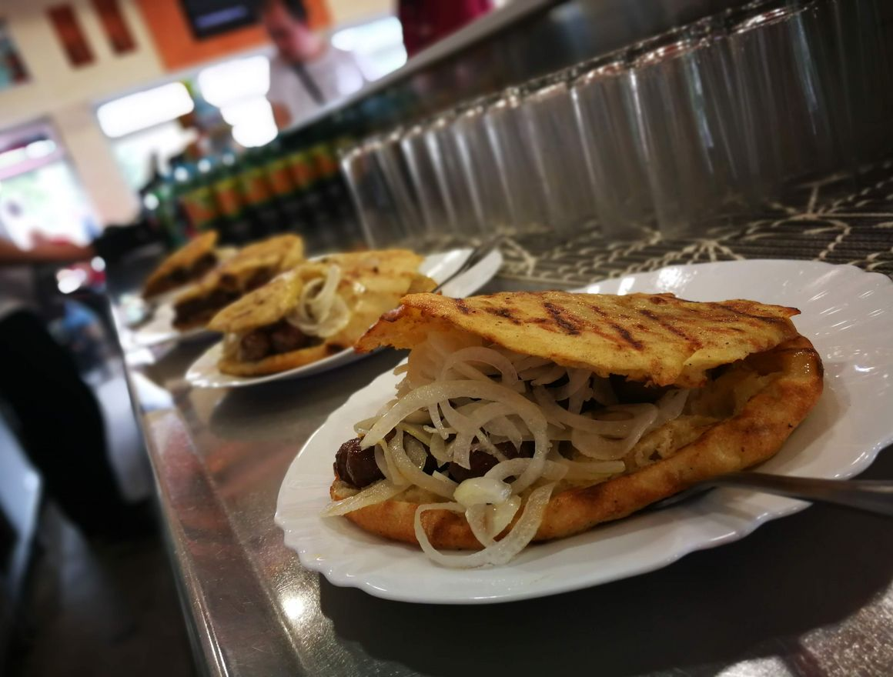

Limenka je najstarija i najpoznatija ćevabdžinica u Tuzli i okolici. Pokrenuta 1967. godine kao obiteljski posao, danas je ova kultna ćevabdžinica jedna od najposjećenijih u ovom dijelu BIH. Prepoznatljivi su po svojim vrhunskim ćevapima, ali i domaćoj lepinji s poljevom.